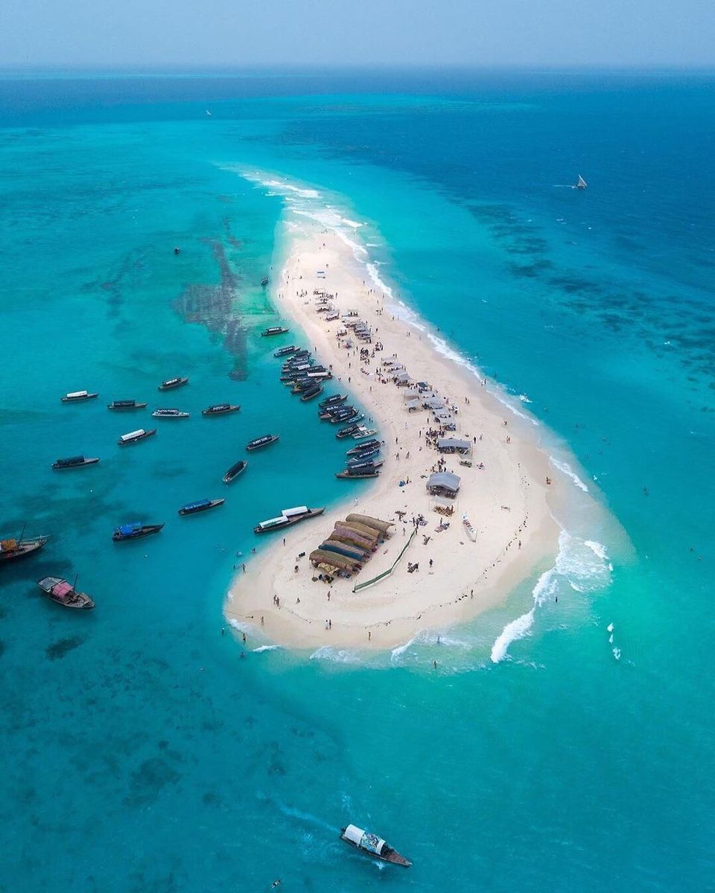

Safari Blue
Length: Full Day
Embark on a thrilling sea adventure in the south of the island! Departing from Fumba village, board a traditional dhow and set sail on a journey to Kwale Island. Along the way, enjoy snorkeling in the crystal-clear waters and take a break on a secluded sand bank to relax and swim. During high tides, take a dip in the lagoon, a natural swimming pool. End the day with a delicious seafood lunch on the beach, surrounded by the stunning island scenery.
-
What you can expect:
- pickup from your hotel
- start of the Safari Blue in traditional wooden "dhow"
- relax time ashore on a sandbank
- snorkeling in the beautiful clear waters of the ocean
- visit of the mangrove lagoon
- visit of the kwale island
- seafood lunch on the island included
- soft drinks included
- transfer back to your hotel